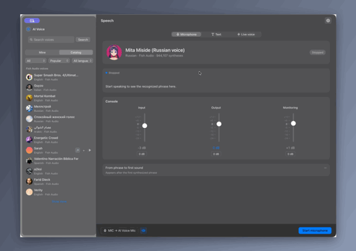
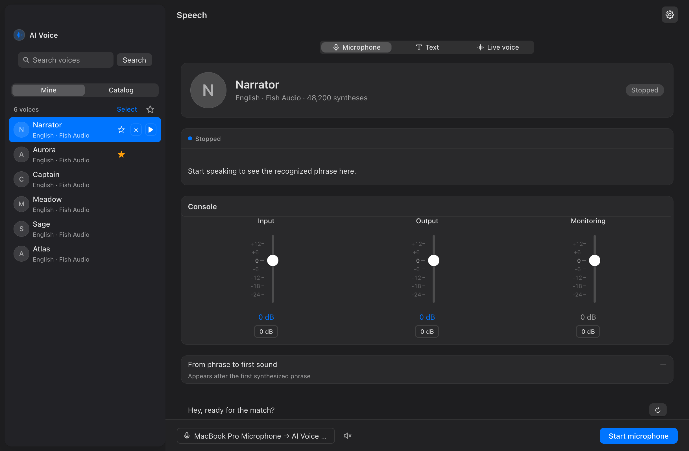
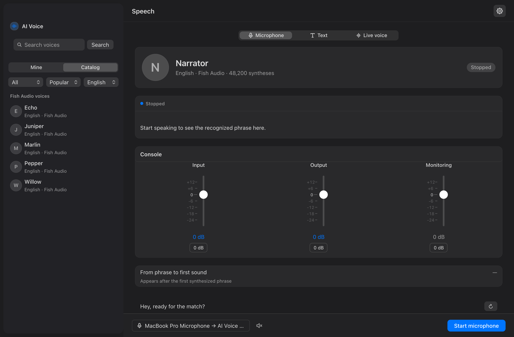
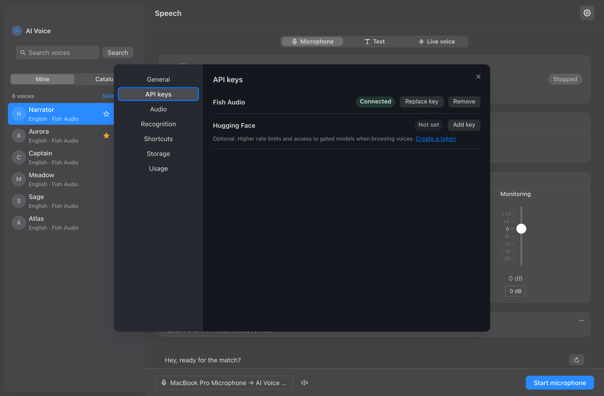
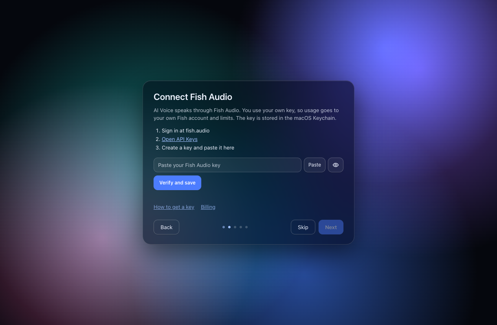
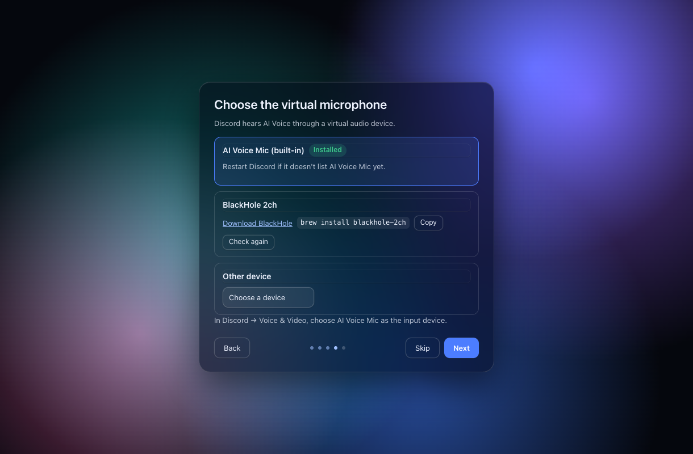
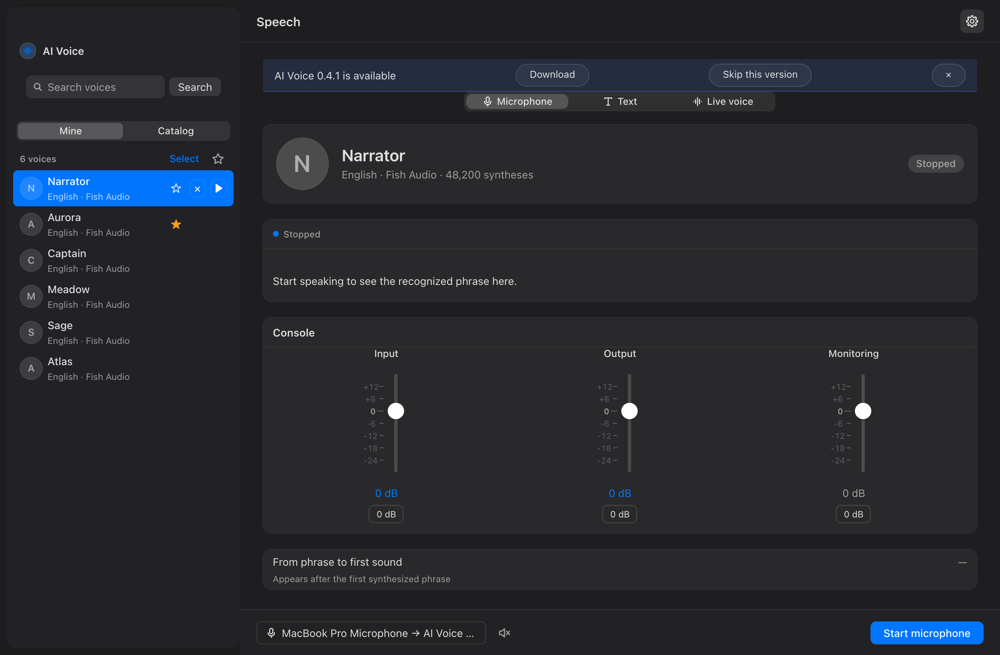
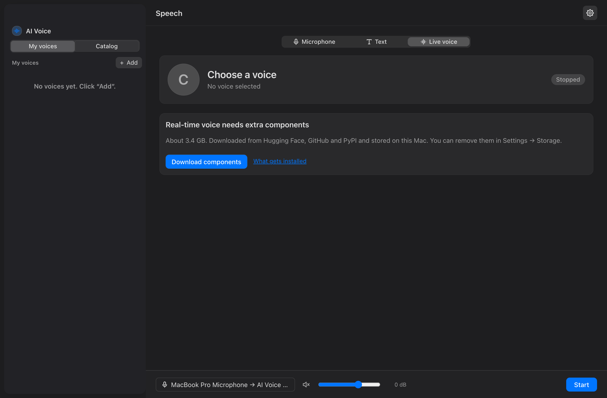

Any voice
Thousands of Fish Audio voices with search, filters and demos, plus voices from your own Fish account. Favourites and a hotkey swap mid-call.
Speak with any voice in any app — your speech, a Fish Audio voice, a virtual microphone.
Download for macOS Download for Windows (beta) View on GitHub
Free and open source · macOS 13+ · Apple silicon · Windows 10/11 x64 (beta)
Thousands of Fish Audio voices with search, filters and demos, plus voices from your own Fish account. Favourites and a hotkey swap mid-call.
Speak into the microphone, or type up to 1000 characters and press Speak text. An experimental Live voice engine converts your voice on-device.
No telemetry, no accounts, no analytics. API keys live only in the macOS Keychain, and audio is never saved to disk.

The demo shows the main window: you pick a Fish Audio voice, speak or type a line, and the result plays through the virtual microphone that other apps use as their input.
Download the app from Releases, move it to Applications and open it. The setup screens handle permissions and the virtual microphone.
Paste your API key once. It is stored in the macOS Keychain, and usage is billed by Fish Audio to your own account.
In your call, stream or game app, select AI Voice Mic as the microphone — and talk with your new voice.







Use your own voice or voices you have the right to use. Do not impersonate real people, deceive, harass, commit fraud or bypass voice verification. Follow the terms of service of Fish Audio and of the apps you use it with. Voice models from Hugging Face have their own licences — check them before use. The authors are not responsible for misuse.